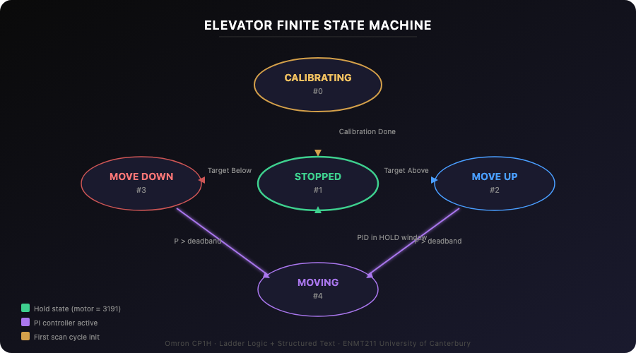
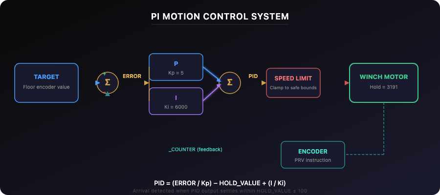
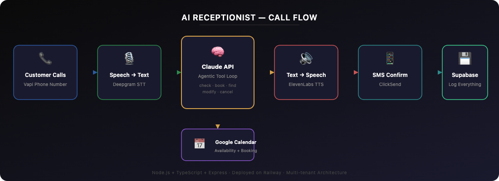

About Me
Building real things
that actually work.
I'm a Mechatronics Engineering student at the University of Canterbury and founder of Kea Concepts — a New Zealand technology studio I built to deliver AI automation and immersive 3D web experiences to local businesses.
From an early age, I was founding businesses, coaching teams, and competing at a national level in sport — Saint Kentigern First XI, NZ Under-17 training squad — all while developing a deep obsession with AI, coding, and automation. I earned a national award for enterprise through the Young Enterprise Scheme and completed the IB Diploma at Saint Kentigern College.
Over the past year I've gone all-in on AI automation — building voice agents, RAG pipelines, and systems that run 24/7 without human input. The thread connecting everything I do is the same: find the problem, understand it deeply, and build something that actually fixes it.
Projects
/7 AI Uptime
Based
Selected Work
Projects
Five-Floor Elevator Control System
A PLC-controlled five-floor elevator programmed in Ladder Logic and Structured Text on an Omron CP1H. Auto-calibrates floor positions on startup, uses a PI controller for smooth motion, and implements a scan-direction scheduling algorithm — all deployed and tested on physical hardware.



What I Built
A complete five-floor elevator control system programmed in Ladder Logic and Structured Text on an Omron CP1H PLC. The system auto-calibrates floor positions from encoder readings on startup, moves the carriage smoothly using a custom PI controller, handles simultaneous requests from inside the car and each landing via a scan-direction scheduler, and controls doors with safety interlocks. Developed in CX-Programmer, tested in CX-Simulator, then deployed to physical hardware.
System States
5-state finite state machine using a single integer variable (CurrentState) — unambiguous state at all times, with each ladder rung gated by the current state value.
Technical Challenges
Auto-calibration across hardware units
Problem: Encoder counts for each floor's limit switch varied between physical elevator units — hardcoded values would be inaccurate on any unit other than the one used during development.
Solution: On startup, the carriage descends to the bottom limit switch, then ascends through all five floors. Encoder counts are captured at both the rising and falling edge of each limit switch, then averaged to produce the target floor position. Works on any unit without manual tuning.
Smooth motion with PI control
Problem: The mechanical asymmetry of the winch caused the same gain values to behave differently going up versus down — overshoot in one direction, sluggish deceleration in the other.
Solution: Implemented a PI controller (Kp = 5, Ki = 6000) with integral anti-windup reset when error reaches zero. Arrival detected when PID output settles within a deadband window around the hold value. Speed limits clamp the motor output to safe bounds in all conditions.
Scan-direction scheduling
Problem: Multiple simultaneous requests from inside the car and landings needed to be serviced efficiently without skipping floors.
Solution: Implemented a scan-direction algorithm in Structured Text using three Boolean request arrays (inside-car, up hall calls, down hall calls). Services all requests in the current direction before reversing — the same algorithm used in real commercial elevators.
Door intermittent re-open bug
Problem: Slight deviations between elevator units caused the PLC to oscillate between Stopped and Moving states — the door would repeatedly open and close.
Solution: Added a deadband to the PID controller's arrival detection, allowing doors to open at slightly different encoder values without causing jamming or a significant floor-level drop.
AI Voice Receptionist
A 24/7 AI receptionist that answers real phone calls, takes restaurant reservations, and books directly into Google Calendar — fully autonomous, no staff required. Built with Vapi, Claude API, ElevenLabs, and a custom Node.js/TypeScript backend deployed on Railway.

What I Built
A fully autonomous AI receptionist that answers phone calls for restaurants, understands natural speech, checks real-time availability against Google Calendar, books tables, and sends SMS confirmations — all without human involvement. Multi-tenant architecture means each business gets its own voice, system prompt, calendar, and config loaded dynamically from Supabase. Currently prototyped for a 60-seat Italian restaurant with plans to expand across hospitality, health, and trades.
How It Works
Customer calls
Vapi + Deepgram STT
Claude processes + tool calls
Google Calendar booking
ElevenLabs TTS reply
SMS confirmation
Technical Challenges
Streaming LLM output to reduce voice latency
Problem: Running STT → LLM → TTS sequentially added 2–4 seconds of dead air — unacceptable for a phone call.
Solution: Implemented SSE (Server-Sent Events) streaming from the Claude API. LLM output is streamed token-by-token and flushed to Vapi's TTS on every sentence boundary (punctuation detection). Audio starts playing before the full response is generated.
NZ speech recognition and slang handling
Problem: Deepgram's STT transcribed NZ slang, filler words, and casual speech poorly — "yeah nah" was interpreted as "yes", "sweet as" was ignored, phone numbers with "double" and "triple" were garbled.
Solution: Built an extensive NZ-specific prompt layer that maps slang to intent: affirmations ("chur", "sweet as", "ka pai"), negations ("yeah nah"), time expressions ("half six" → 18:30), and phone number shorthand ("double three" → 33, "oh two seven" → 027). The system prompt handles ~100+ NZ speech patterns.
Capacity-aware booking with overlap detection
Problem: A simple "is the slot taken?" check doesn't work for restaurants — a 60-seat restaurant can have many overlapping bookings, and each party has a different size and meal duration.
Solution: Built a sliding-window capacity checker that queries all Google Calendar events for the day, calculates guest overlap within a 90-minute meal window, and returns remaining seats. If the requested slot is full, it automatically scans the next 14 days and suggests up to 3 alternative slots.
Multi-tenant architecture from day one
Problem: Each restaurant has different hours, capacity, calendar, voice, and personality — hardcoding any of these would make scaling impossible.
Solution: Every business is a row in Supabase. The system prompt, voice ID, calendar ID, opening hours, and special notes are all loaded dynamically per call based on the Vapi assistant ID. Onboarding a new restaurant = adding a database row and connecting their Google Calendar. Business records are cached with a 60-second TTL to avoid hitting Supabase on every call.
Tool-calling agentic loop
Problem: The AI needs to do more than just talk — it needs to check availability, create bookings, find existing bookings, modify them, and cancel them, all mid-conversation.
Solution: Implemented a full agentic tool-calling loop using the Anthropic API. Five tools (check_availability, create_booking, find_booking, modify_booking, cancel_booking) are defined with JSON schemas. When Claude returns a tool_use stop reason, the server executes the tool, feeds the result back, and lets Claude continue — looping until it produces a final text response.
Deployment
Backend deployed on Railway with a Vapi webhook endpoint. Each call hits the Express server, which streams Claude's response back via SSE. All bookings, conversations, and customer records are logged to Supabase. An owner dashboard shows today's reservations, weekly analytics, and booking management.
Live and taking calls. Onboarding via Kea Concepts.
AI-Powered 3D Animation Websites
A repeatable pipeline for building and deploying immersive 3D animation websites for NZ businesses. Three.js + GLSL + GSAP + AI-assisted development — delivery time cut by ~60%.
What I Built
A pipeline for rapidly building and deploying immersive 3D animation websites — combining AI-assisted development with Three.js, WebGL shaders, and GSAP scroll-driven animation. Concept to deployed 3D website in a fraction of the usual time.
Technical Stack
Three.js / WebGL
Custom GLSL shaders, particle systems, PBR materials, bloom and depth-of-field.
GSAP ScrollTrigger
Scroll-pinned sequences, timeline scrubbing, parallax layers tied to scroll position.
AI-Assisted Development
Claude and GPT-4 for rapid prototyping, then hand-refined for production. Delivery time cut ~60%.
Technical Challenges
60fps on mobile
Problem: Dense 3D scenes drop to 15fps on mid-range mobile.
Solution: GPU tier detection, three quality presets, LOD swapping, selective post-processing.
Three.js + scroll sync
Problem: RAF vs scroll event jitter.
Solution: GSAP's ticker as single source of truth — Three.js renderer inside GSAP's RAF loop.
Results
Via adaptive quality
Faster delivery
Businesses served
Current Clients
Full commercial engagements for established NZ businesses, in active development 2026.
Enquire via Kea Concepts — client names under NDA.
Get In Touch
Let's work together.
Open to engineering internships, software roles, and freelance AI/web projects.
cli199@uclive.ac.nz